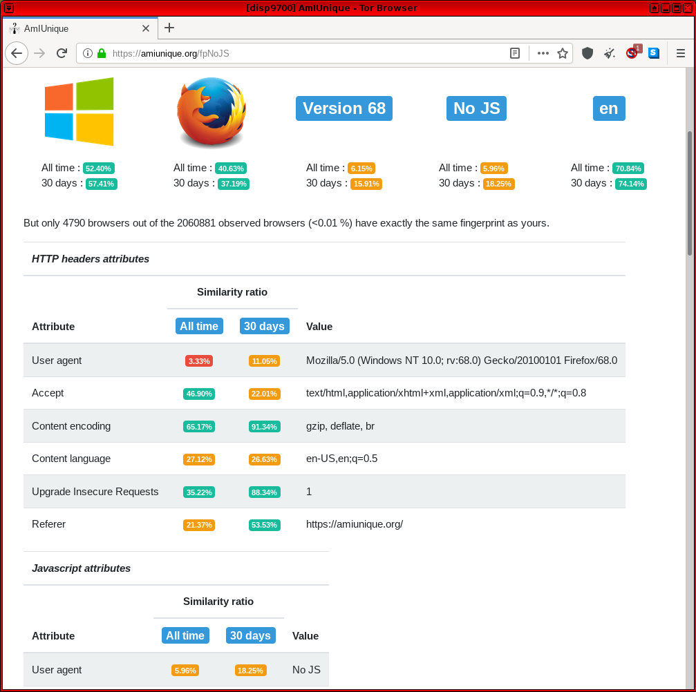
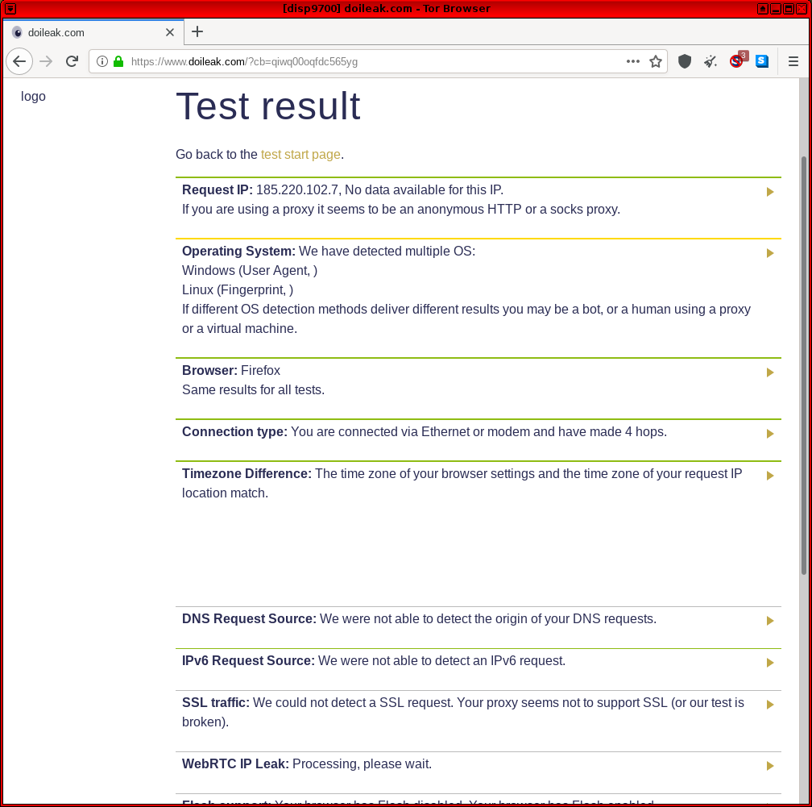
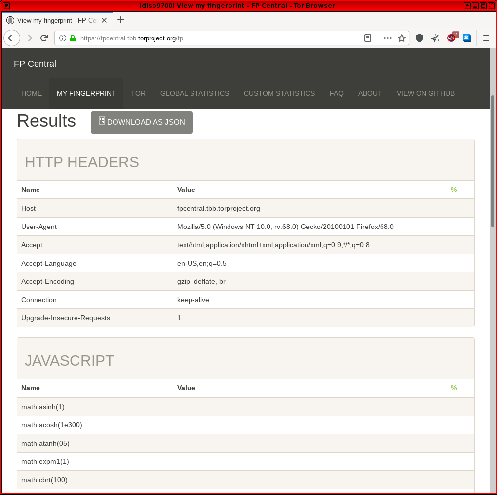
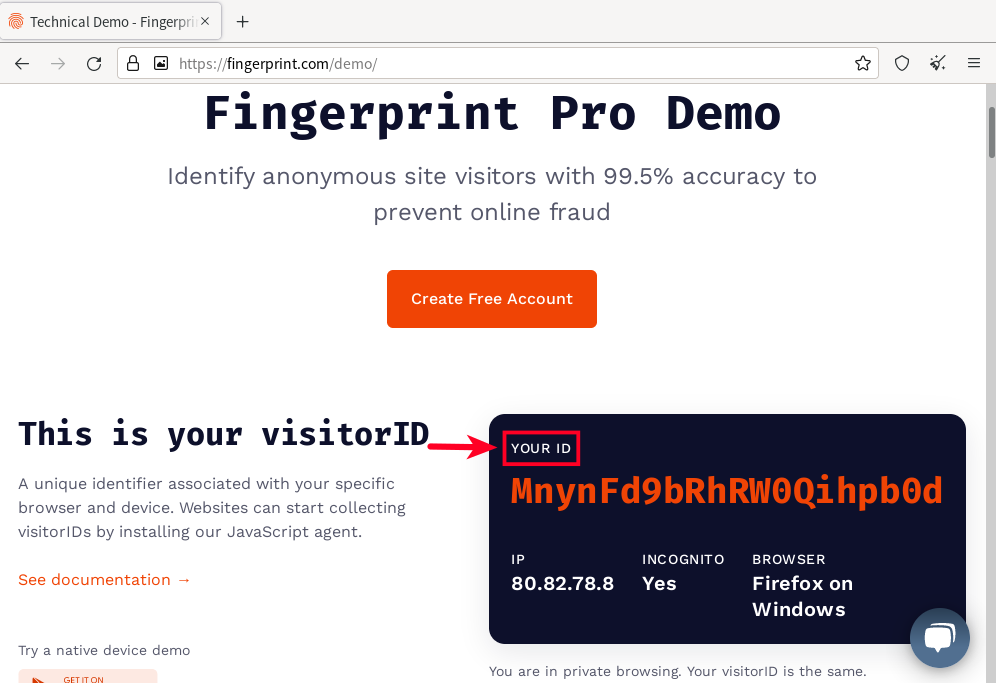
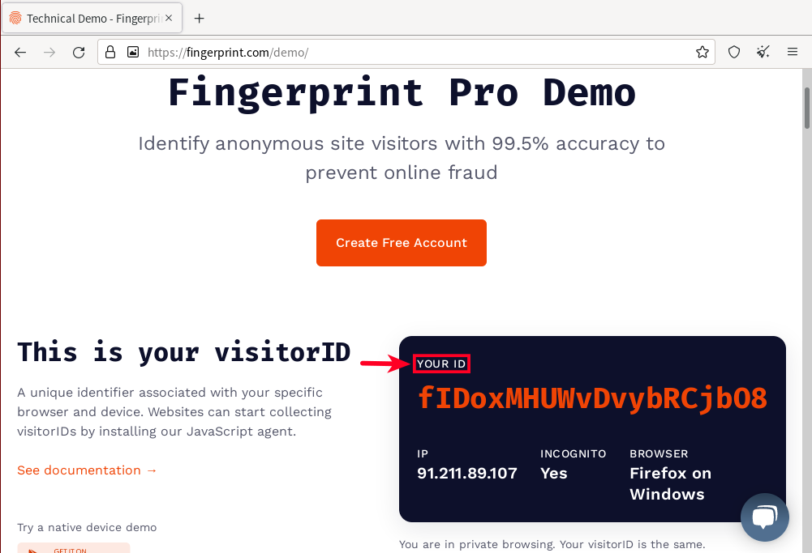
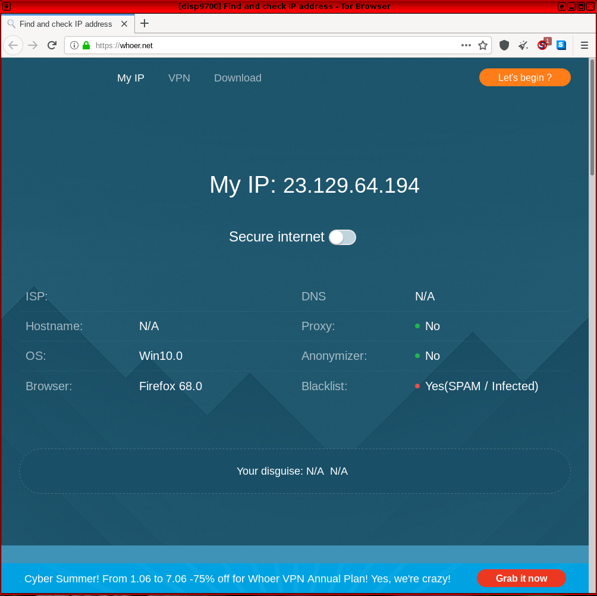

{kind=link}
We believe security software like Whonix needs to remain Open Source and independent. Would you help sustain and grow the project? Learn more about our 11 year success story and maybe DONATE!

check.torproject.org says "Sorry. You are not using Tor."? On false positives. And browser fingerprinting. How unique are you? On Browser Tests and Browser Security. Notes on sites such as ip-check.info and whoer.net.
Interpreting Test Results
Sites like whoer.net or ip-check.info are
unable to adequately assess and demonstrate the threat of fingerprinting
techniques with respect to Tor
Browser. These sites generally check for various browser
characteristics as well as enabled functionality to reveal specific
identifiers. Many of these identifiers require JavaScript, but reports
commonly include elements like HTTP headers and attributes, the User
Agent, numerous JavaScript attributes, IP address, operating system
indicators, browser plugins, cookies, cache, browser window dimensions,
fonts and so on. If these elements are enabled/activated, then the
browser test sites provide more fine-grained results -- although the Tor
Browser design has already taken many into account.
Tor Browser developers have carefully considered Cross-Origin Identifier Unlinkability and Cross-Origin Fingerprinting Unlinkability defenses in their anonymity design. Efforts are focused upon:
- First party isolation of all browser identifier sources (such as cookies, cache etc.) by browser tab. These are deleted after closing the browser, but are saved temporarily while the browser is open so most sites are accessible.
- Specific fingerprinting defenses such as disabling browser plugins, preventing HTML5 data extraction, preventing access to the local host and WebRTC API, resizing browser windows to specific dimensions, and many more.
A fundamental principle adopted to improve Tor Browser anonymity is to make all users appear as uniform (similar) as possible, thereby greatly reducing the effectiveness of tracking efforts by various websites and network observers who rely on identifiers. To learn more about how The Tor Project is preparing to defend against future fingerprinting threats, refer to this recent (2019) blog post: Browser Fingerprinting: An Introduction and the Challenges Ahead.
Making Browsers Safer
Browser fingerprinting defenses are imperfect and most probably always will be. [1] However, steady improvements are being made over time despite the emergence of novel tracking threats identified by researchers and developers alike. There are certainly too few volunteers who are seriously focused on testing browsers and defeating browser fingerprinting methods.
If you are reading this page, then it is safe to assume being anonymous (less unique), and remaining so is of great interest. Users with a serious intention to research these issues are encouraged to assist in accordance with their skills. Testing, bug reporting or even bug fixing are laudable endeavors. If this process is unfamiliar, understand that about thirty minutes is required per message / identifier to ascertain if the discovered result [2] is a false positive, regression, known or unknown issue.
To date, none of the various leak testing websites running inside Whonix-Workstation™ were ever able to discover the real (external), clearnet IP address of a user during tests. This held true even when using JavaScript or plugins such as Flash Player and/or Java were activated, despite the known fingerprinting risks. Messages such as "Something Went Wrong! Tor is not working in this browser." [3] (from about:tor) or "Sorry. You are not using Tor." (from check.torproject.org) are in most cases non-issues. If the real, external IP address can be revealed from inside Whonix-Workstation, then this would constitute a serious and heretofore unknown issue (otherwise not).
It is unhelpful to ask questions in forums, issue trackers and on various mailing lists with concerns that have already been discussed, or which are known issues / false positives. In all cases, please first search thoroughly for the result that was found. Otherwise, the noise to signal ratio increases and Whonix development is hindered. Users valuing anonymity don't want this, otherwise this would violate the aforementioned assumption.
If something is identified that appears to be a Whonix-specific issue, please first read the Whonix Self Support First Policy before making a notification.
Browser Test Sites
AmIUnique
- https://amiunique.org/ -- GitHub source code. This is a general fingerprinting site relying on common identifiers.
Figure: AmIUnique Test in Whonix

cpuid visualiser
The cpuid visualiser is not a browser test. As its website cpuid.apps.poly.nomial.co.uk
correctly states, it is a CPUID visualizer. It does not claim that it
can detect the CPUID from the user's computer. This is further evidenced
by the website writing sample cpuid data. The functionality
of the cpuid visualiser is for a user to voluntarily, locally gather
their CPU binary register data and paste it into the cpuid visualiser so
it can be decoded and visualized.
CPU model and capabilities cannot be remotely detected by a website even if the browser has JavaScript (JS) enabled. See CPUID.
If a user wants to verify this, the following footnote could be considered. [4]
CreepJS
Doileak.com
- https://www.doileak.com -- This is another site testing the most common leaks such as IP address, operating system, browser, connection type, timezone difference, WebGL support and so on. However, it also includes some uncommon tests such as UDP and torrent leak tests.
Figure: Doileak.com Test in Whonix

Fingerprint Central
Fingerprint Central is the successor to the https://web.archive.org/web/20170207112813/https://fpcentral.irisa.fr/ website, which now appears defunct. The original code is still found on GitHub and can be run locally to help Tor Browser developers rapidly create prototype defenses. [5] The same researchers run Fingerprint Central and have designed the test to differ from Panopticlick, as it is dedicated to testing discrepancies between Tor Browser instances only. This assists Tor Browser developers with testing before releases.
Figure: Fingerprint Central Test in Whonix

Fingerprint.com
The Fingerprint.com Demo
(formerly FingerprintJS) (on GitHub) is
a particularly important test, since "12% of the largest 500 websites use
Fingerprint.com". Through use of browser fingerprinting, fingerprint.com attempts to
assign a unique identifier to the user that is similar to an IP
address. Fingerprint.com refers to that unique identifier as
visitorID.
Note: The following table is further explained below.
Tracking Attack |
Defend Tracking |
|---|---|
cannot track Tor Browser after browser restart |
Yes |
cannot track Tor Browser after using its new identity function |
Yes |
cannot track Tor Browser running in different Whonix VMs on the same computer |
Yes |
cannot correlate multiple browser tabs in the same browser on the same top level domain |
No |
cannot correlate multiple browser tabs in the same browser on different top level domains |
Unknown. |
Figure: Fingerprint.com visitorID
Demo in Whonix

Using Tor Browser's new identity
function results in a different browser fingerprint. Fingerprint.com
will detect a different visitorID. The same applies after
restarting Tor Browser.
Fortunately, fingerprint.com is unable to assign the same
visitorID to different instances of Tor Browser running in different Whonix-Workstation™. In other words,
when using multiple Whonix-Workstation™,
fingerprint.com fails to correlate them to the same pseudonym. This
benefits users who wish to avoid tracking.
Figure: Different Fingerprint.com
visitorID after browser restart

When opening the fingerprint.com demo in multiple browser tabs in the
same browser, fingerprint.com detects the same visitorID.
This is because Tor Browser only attempts to provide a different
identity in different browser tabs for different top level domain
names.
See also:
- Unsafe Tor Browser Habits for mitigations.
- Internet Corporations and Privacy Concerns: Fingerprint.com
- Related, see also schemeflood.com.
Cover Your Tracks
Cover Your Tracks (previously called Panopticlick) was first launched in 2010. It is designed to gather information about common identifiers such as operating system version, browser, plugins and so on, and compare it against a central database of many other Internet users' configurations. In addition, it tests tracker blocker effectiveness, including tools like AdBlock, Disconnect and Ghostery. [6]
To learn more about EFF's
Cover Your Tracks test and what it signifies for Tor Browser, refer
to the following blog post by The Tor Project: EFF's
Panopticlick Cover Your Tracks and Torbutton.
Figure: Cover Your Tracks (previously Panopticlick) v3 Test in Whonix

schemeflood.com
 Documentation for this is incomplete. Contributions are happily
considered! See this for
potential alternatives.
Documentation for this is incomplete. Contributions are happily
considered! See this for
potential alternatives.
The following identifier is a good identifier since shared [...]
0FVVVVQuote M. Sylvester, @mfsylv, creator of schemeflood.com:
The same identifier OFVVVV being generated is immediately concerning until its uselessness is observed. This identifier is generated ~8.9% of the time, when none of the matching applications are detected.
See Unsafe Tor Browser Habits for mitigations.
Related, see also Fingerprint.com and VM Fingerprinting.
Forum discussion: https://forums.whonix.org/t/protocol-flooding-attack-scheme-flood-browser-fingerprinting/11729
The Tor Project
 Note: For information concerning the
Note: For information concerning the about:tor message, refer to the
following forum
[3] discussions.
Users are requested not to post any "Sorry. You are not using Tor." questions in the Whonix forums unless certain it is not a false positive. If this message appears, there is no need to be concerned because:
- Whonix is designed to tunnel everything over Tor.
- https://check.torproject.org
(
check.tpo) sometimes fails to detect Tor exit relays. This is a bug incheck.tpo, which only The Tor Project can fix. - Previous reports involved IP addresses unassociated with the user's real, external, clearnet IP address. To discover your clearnet (non-Whonix) IP address, visit one of the sites on this page from the host or a non-Tor virtual machine.
- ExoneraTor can be accessed with Tor Browser on the host. ExoneraTor is a website hosted by The Tor Project that indicates whether a given IP address was a Tor relay on a specified date.
Figure: Successful Tor Network Check in Whonix

WebCPU
WebCPU. See WebCPU (live demo).
Fingerprinting Tor Browser using WebCPU is probably not possible. The WebCPU test results differ in different browser tabs. Test results are also different in Tor Browser versus other browsers.
WhatIsMyBrowser.com
- https://www.whatismybrowser.com/ -- This is a general fingerprinting site that tests for common leaks including web browser settings, screen resolution, IP address, use of the Tor network and so on.
Figure: WhatIsMyBrowser.com Test in Whonix
Whoer.net
https://whoer.net/ -- This is another site relying on common fingerprinting methods, including browser attributes, IP address, language localization, time, WebRTC, plugins, cookies and so on.
Figure: Whoer.net Test in Whonix

Benchmarks
- https://web.archive.org/web/20220512115604/https://www.matthew-x83.com/online/cpu-benchmark.php
- https://silver.urih.com/
Other Services
Interested readers are encouraged to try the browser test sites below, as well as research and add further resources here:
- Browserleaks.com CSS Media Queries Test -- Screen resolution fingerprinting without the need for JavaScript. It utilizes CSS features to fetch information.
- AudioContext Fingerprint Test Page -- Audio stack and Canvas API fingerprinting.
- Cloudflare ESNI Checker -- DNSSEC test.
- TorZillaPrint -- Tor Browser fingerprinting.
- Get CPU/GPU/memory information
- deviceinfo.me
Miscellaneous
- The Tor Project task: Create our own instance of Panopticlick
- PrivacyTests.org - Open-source tests of web browser privacy [7]
More Tests

Redirection to Kicksecure Documentation
- Introduction: <a href="../Introduction/">Whonix Documentation Introduction, User Expectations, Footnotes and References, User Expectations - What Documentation Is and What It Is Not</a>
- <a href="../About/#Based_on_Kicksecure">Whonix is based on Kicksecure™</a>: Whonix is built on top of Kicksecure. This means it uses many of the same security tools, design concepts, and configurations.
- <a href="https://www.kicksecure.com/wiki/Based_on_Debian">Kicksecure is based on Debian</a>: Kicksecure is developed using Debian as its base. Debian is a widely used, stable, and free Linux operating system.
- Inheritance: As a result, Whonix is also <a href="../Based_on_Debian/">based on Debian</a>.
- Debian is GNU/Linux-based: Debian is built using the GNU/Linux operating system. GNU provides essential tools and Linux is the system's kernel (core).
- Shared documentation benefits: Since each system is based on the one below it, a lot of documentation and guides are shared. This reduces the need to duplicate information.
- Inherited documentation: Most instructions and explanations are inherited from Kicksecure or Debian, unless otherwise specified.
- Shared principles: The systems share similar security goals and setup instructions. In most cases, users can follow Kicksecure documentation when using Whonix.
- Keep using Whonix: This does not mean users should switch to Kicksecure. This page only points to related, helpful information.
- Where to apply the instructions: Follow the instructions inside Whonix unless specifically stated otherwise.
- Wiki editors notice: This information is pulled from a reusable wiki template: <a href="../Template:Upstream_wiki/">upstream_wiki</a>. (<a href="../Special:WhatLinksHere/Template:Upstream_wiki/">See which pages use this</a>.)
- Comparison: <a href="../Comparison_with_Kicksecure/">Whonix versus Kicksecure</a>
- Documentation compatibility: Because Whonix is based on Kicksecure, you can often follow Kicksecure's instructions as long as you apply them in the right place.
- Summary: Whonix is built on top of Kicksecure, which itself is based on Debian. Debian is a GNU/Linux operating system. This layered design means Whonix inherits many features, tools, and documentation from both Kicksecure and Debian.
- Click here: Visit the related page in the Kicksecure wiki for full documentation and background:
 [Broken-ExtLink--no-url-was-provided]
[Broken-ExtLink--no-url-was-provided]
- Note: Re-interpretation...
Apply the instructions inside Whonix, not inside Kicksecure.
Kicksecure: Perform these steps inside Kicksecure.
Instead, apply the steps inside Whonix-Workstation.
Kicksecure for Qubes: Perform these steps inside Qubes
kicksecure-18Template.
Instead, use the whonix-workstation-18 Template for
these steps.
See Also
Footnotes
- See tbb-linkability and tbb-fingerprinting.
- From a browser test website, in a log file and so on.
- https://forums.whonix.org/uploads/default/original/1X/c2c9bb5dc7efee7a933dd00d3bf0c30c29c99daa.png
- cpuid visualiser is a visualizer, not a CPUID detector
This is not required for most users. Only for users who wish to verify the above statements. Please test on different computers with different CPUs and check if the detected CPU information by the website is different. 1. Make sure JavaScript (JS) has not been disabled (NoScript users). 2. If using Tor Browser, make sure the Tor Browser security slider setting is not set to "safest". 3. Go to https://cpuid.apps.poly.nomial.co.uk/ with one computer. 4. Go to https://cpuid.apps.poly.nomial.co.uk/ with another computer that has a different CPU model. 5. Compare the results. * If it is the same, then no differences in the CPUs were detected. * If it would be different, then the visualizer was updated to a detector, but this is highly unlikely. 6. Optional: Report the result in the forums. Note: Do not paste your actual CPU information. forum discussion 7. Done.
- https://lists.torproject.org/pipermail/tor-dev/2016-July/011233.html
- https://coveryourtracks.eff.org/about
- * https://twitter.com/privacytests * https://twitter.com/Whonix/status/1628364747698589702
Categories: Documentation